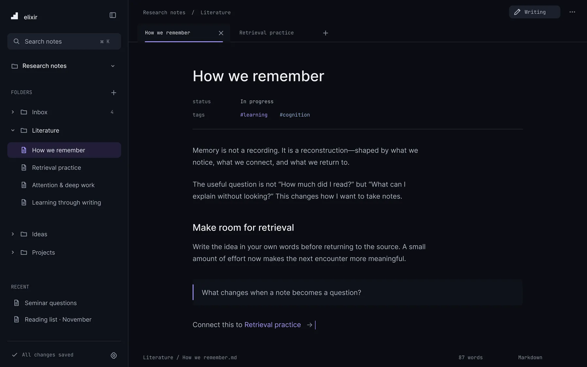
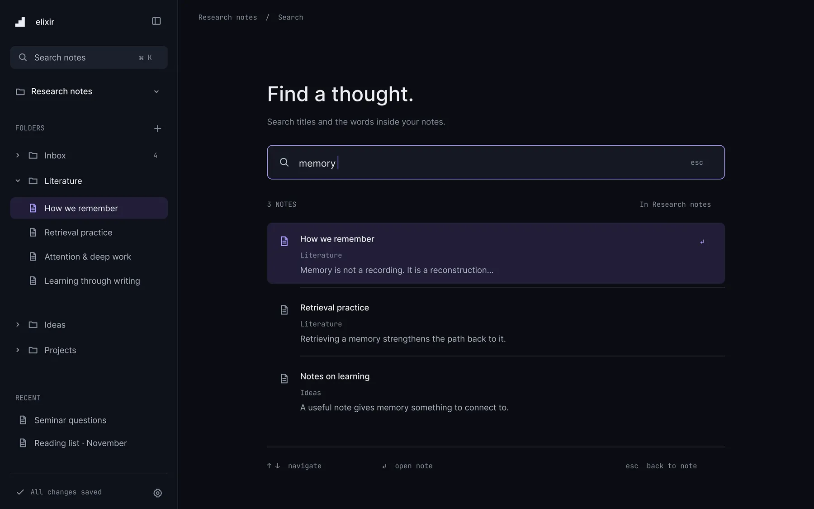
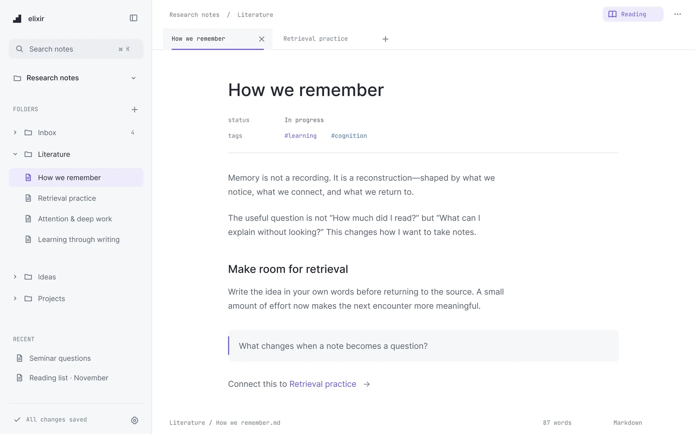

Think clearly
with elixir.
A quiet notes app for research. Your notes are plain Markdown files on your computer, and it’s completely free.
Beta 0.1.0. No account needed. Works offline.

Everything you need.
Nothing you don’t.
Built for reading, collecting, and writing. Calm on the surface, capable underneath.
Your folder, your files
Every note is a Markdown file you can open anywhere.
Instant search
Search titles, text, and properties with Ctrl K.
Research properties
Add status, source, author, date, and #tags.
Linked notes
Type [[ to connect ideas and see backlinks.
Writing and Reading
Switch modes with one key. Reading is distraction free.
Preview as a page
See a note as a document or blog post, then export.
Light and dark
Follows your system, or pick the one you like.
Works offline
No account. No upload. It opens fast on any laptop.
Find a thought
in seconds.
Search the titles and the words inside every note. Results show the folder and the line that matched.

Write. Then just read.
One key turns your note into a clean page with larger type and no editing controls. It looks as good in light as it does in dark.
- Writing and Reading with Ctrl E
- Preview as a document or blog post
- Export to PDF, HTML, or Markdown

Sync online with
Google Drive.
Notes stay as files on your computer. Connect Google Drive and elixir keeps a copy online, so you can back up and pick up on another device.
Optional. Skip it and everything stays on your device.
Open a folder.
Start a note.
Choose a folder you already use, or create a new one. There’s nothing to sign up for and nothing to set up.
- No account, no upload
- Works with your existing Markdown notes
- Your files stay yours
No plans. No limits. No trial.
- Unlimited notes
- Google Drive sync
- Reading and preview
- Export to PDF and HTML
- Light and dark themes
- Works offline
Questions
Is elixir really free?
Yes. The app and Google Drive sync are free to use.
Is it available on Mac?
Not yet. elixir is available for Windows today, and a Mac version is planned.
Where are my notes stored?
In a folder on your computer that you choose. Turn on Google Drive sync if you also want an online copy.
Can I use my existing Markdown notes?
Yes. Open the folder that holds them and elixir reads them as they are.